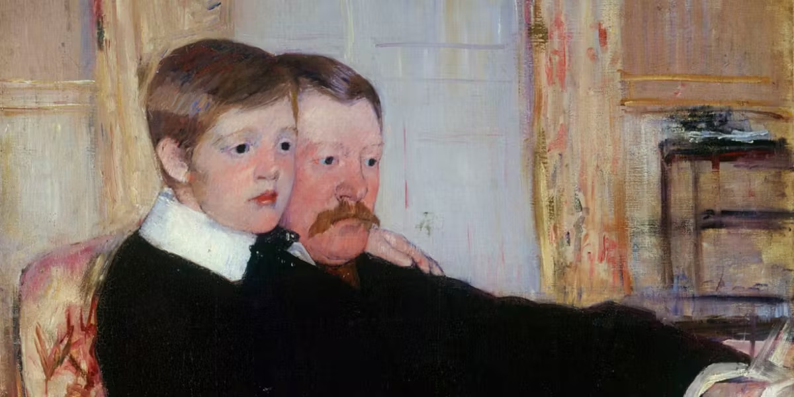

An Orthodox Christian journal · Faith & family
A life
of quiet
devotion.
The mission, beliefs, daily living, prayers, and writings of Sons of St. Joseph.
Faith handed from one generation to the next
Mission
With Saint Joseph as our sponsor, guide, and foster-father, the Sons of Saint Joseph are Christian men who hope to overcome all same-sex attractions and any persistent attachments to the homosexual or the “gay” orientation. This will be accomplished through: frequent reception of the Sacraments, daily prayer, spiritual direction, self-sacrifice, corporal and spiritual works of mercy, professional counseling, and by developing the virtues of prudence, temperance, and courage.
02 / The inner life
The sacred
in the ordinary.
Faith is not confined to the sanctuary. It is lived in the small choices: a patient word, an honest day's work, a prayer in the stillness, a hand extended to another.
Read our reflections ↗03 / Reflections
From the
journal.
Selected writing by Joseph Sciambra. Visit the original site for full articles.
Fatherhood
July 14, 2026 · Joseph Sciambra

Family
November 11, 2025 · Joseph Sciambra
The journey
December 14, 2024 · Joseph Sciambra
From the original Sons of St. Joseph
Beliefs
- We accept Our Lord Jesus Christ as our One and Only Savior.
- We accept that only through the Infinite Power and Mercy of Jesus Christ can we be fully healed of homosexual desires.
- We accept Saint Joseph, the foster-father of Our Lord, as our gracious benefactor in Heaven.
- We look towards Our Blessed Lady, the Theotokos, as the model of humility, obedience, and purity.
- We believe and acknowledge that God created us as whole men; we were not born “gay.”
- We acknowledge that homosexual acts are not part of God’s plan for nature, humanity, or ourselves.
- We acknowledge that the homosexual inclination is a part of our wounded false-self that can be healed.
- We acknowledge that all unmarried persons are called to chastity.
From the original Sons of St. Joseph
Daily Living
- Attendance at Divine Liturgy every Sunday and on Holy Days of Obligation; and during the week when possible.
- Daily prayer and meditation (a minimum of one hour) which should include at least one of the following:
- Set up an “icon corner” in your house or bedroom; specifically with an icon of Saint Joseph or an icon from the life of Christ which includes Saint Joseph; for example, The Birth of Christ or The Presentation in the Temple.
- Going about our daily work as did Saint Joseph: with a countenance of fortitude, humility, and silence.
- Some sort of propitiation: fasting, abstinence, self-denial (avoiding television, computer games, the internet, or another enjoyment).
- Custody of the eyes: keeping our gaze away from that which is an occasion of sin.
- Daily Thanksgiving to Our Lord Jesus Christ.
- Daily Act of Contrition.
- The Saint Joseph Prayer.
From the original Sons of St. Joseph
Goals
- To accept and admit to ourselves and to God that we have been wounded
- To forgive those who hurt us.
- To understand why we looked towards homosexuality and the “gay” lifestyle as an answer to all our questions.
- To eventually heal those old injuries.
- To help others escape the “gay” lifestyle and the trap of homosexuality.
- To live our lives as a perpetual sacrifice; not only for our own “Christian perfection,” but in reparation for those sins committed by all homosexuals.
- To become more and more like our foster-father Saint Joseph; to become models of manly virtue, protectors of the weak and the persecuted, and to become obedient servants of Christ and Our Lady.
Original writings
Frequently Asked Questions
The complete FAQ, original photography, article archives, and Joseph’s essays remain available at josephsciambra.com. This prototype does not yet reproduce their complete text.
A life of faith
“Not everything sacred is loud. Some of the deepest work is done in silence.”
Sons of St. Joseph